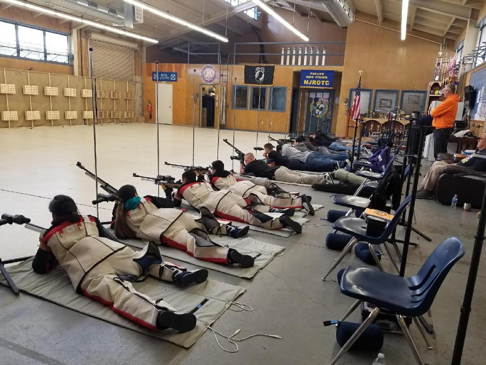

Parlier High School
Naval Junior Reserve Officers Training Corps
Unit

Led by retired Navy personnel the Parlier High School Navy Junior Reserve Officer Training Corps or NJROTC was established in 1995. Our goal is to mold our students into better citizens by teaching them real-life skills for a better future. Our NJROTC program helps cadets with leadership, management, responsibility, discipline, physical training, and confidence, Exposing them to real-world situations. Cadets begin learning self-discipline with basic drills such as the position of attention, parade rest, and marching.
Cadets have many opportunities to be involved through our Academic, Air Rifle, Color Guard, and Drill Teams. Cadets also have an opportunity to be part of the Unit Staff and are able to be promoted in rank by completing the advanced requirements.
Our Unit is active in our local community through various activities including parades, service projects, and providing held during many of our community's activities. We strive to make both our campus and our community a better place